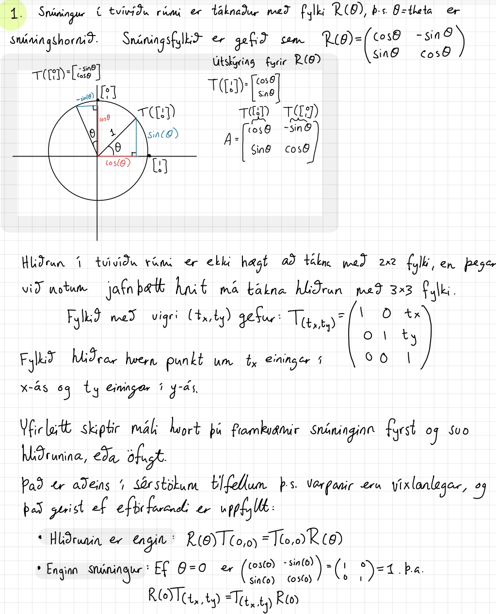
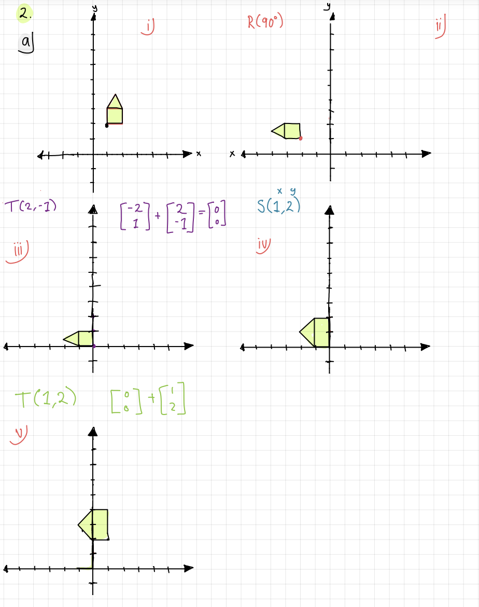
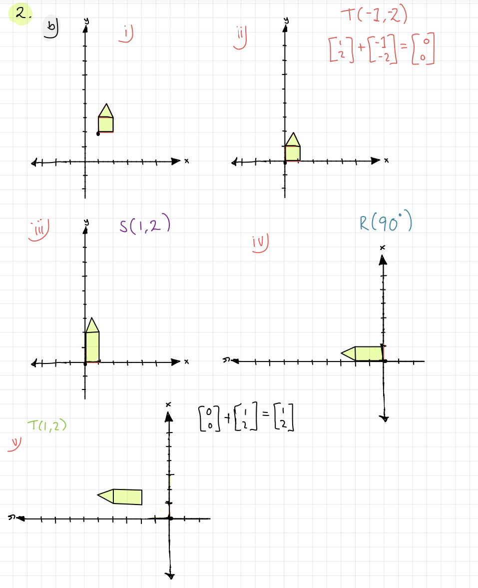
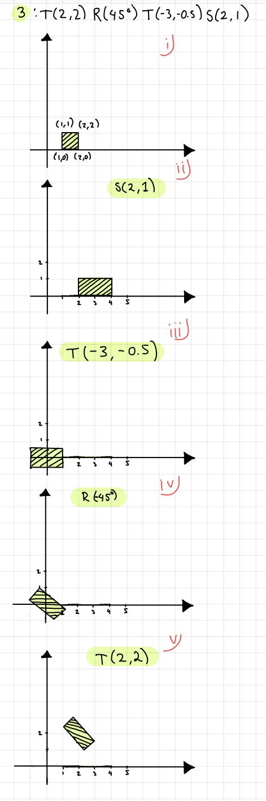
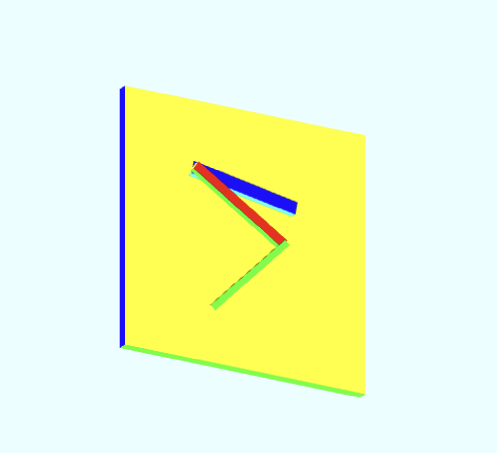

Tölvugrafík - Heimadæmi 4
Nemandi: Ásdís Valtýsdóttir
Skiladæmi 1
Mynd af 1:
Skiladæmi 2
Mynd af 2:
 Skiladæmi 3
Skiladæmi 4
Mynd af 4:

Hér lærði ég að búa til billy hillu. Ég bjó til 7 kassa, og breytti staðsetningu þeirra með translate vörpun og stækkaði/minnkaði x,y og z hnitin með scalem vörpuninni
hér er dæmi fjögur.Skiladæmi 5
Mynd af 5:
Hér lærði ég að nota vörpunarfylkin scalem, translate, og rotate. Ég notaði translate til þess að "festa armana saman".
hér er dæmi fimm.